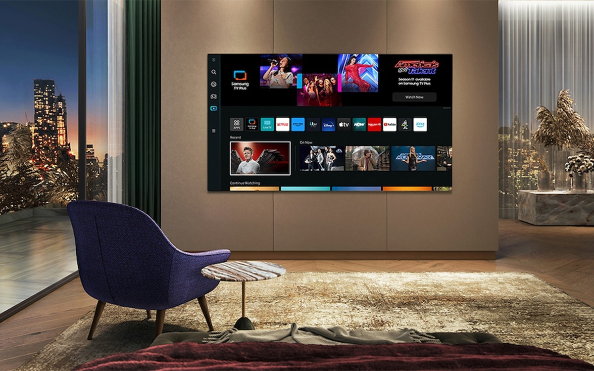

TIPS FOR TELEVISION POWER CONSUMPTION
Televisions are a common appliance in Australian homes and can impact your household’s energy consumption. Choosing an energy-efficient TV helps reduce electricity bills and environmental impact. Look for the Energy Rating Label when buying a new television.

Television Energy Consumption Insights in Australia: Data Story
When shopping for a new television, it is important to look beyond the purchase price and consider long-term energy costs. The insights below will help you choose a TV that best suits your needs.
-
Which type of TV screen is the most popular in Australia?

LCD(LED) is the most common screen technology available in Australia and have a proportion of 84.52% whereas OLED has the least which only have 6.84%.
-
What screen sizes are frequently bought by the Australian?

Most Australian consumers preferred screen size ranges from 55-85 where 55Inch is the most frequent. Consumer who preferred mid range sizes will go for 24-49 inches.
-
Which brands offer the most choices of TV models?

Samsung Electronics stands out as the most popular brand among Australian consumers. Kogan and LG follow behind, with only a small difference of 20 models between them.
-
Which kind of screen technology uses the least power?

LCD is the most energy efficient screen technology compared to LCD(LED) and OLED.
-
Is the screen size going to impact the energy consumption?

Noticed there is an increasing trend which indicates that the larger screen size will consume more power supply.
-
Do larger TV screen size gets higher star ratings?

The chart proves that there is no relationship between star rating and screen size. Therefore, we can conclude that screen size does not influence star rating.
-
Are there differences in power consumption between brands?

The chart reveals power consumption varies significantly across brands.
Conclusion
In conclusion, LCD (LED) TVs with a 55-inch screen are the most popular choice in the Australian market. Samsung Electronics is the leading brand, followed by others. While larger screens consume more power, this does not affect star ratings. Since power use also varies across brands, it is important to consider both brand and screen size when choosing an energy-efficient TV.